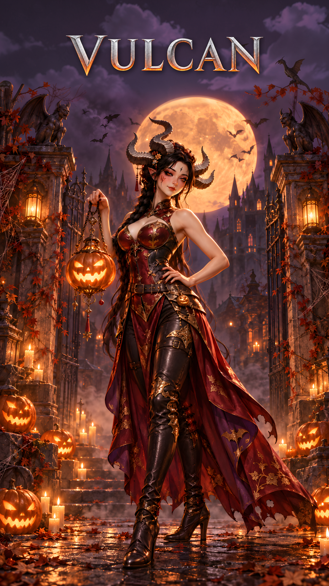

불칸 1.14 분석 리포트
불칸(VULCAN) Android 빌드 1.14.0.1 (build 322, VULCAN_1_14_0_1_322_Google_Tencent.apk)을 정적 분석했습니다. 게임 데이터 29종을 전부 해석해 콘텐츠·재화·성장·수익화 구조를 복원했고, 같은 데이터로 카테고리별 역기획서를 함께 만들었습니다.

한눈에 보기
핵심 발견
높음 장비 134종 중 128종의 제작 재료 참조가 아이템이 아닌 에셋을 가리킴
장비 데이터 파일 원본 바이트의 참조 GUID가 재질(Material)·AvatarMask·애니메이터 파일을 가리킴. 1.13.14의 같은 칸과 1:1 대응(금속 판→재질 wa-11, 서광 섬유→AvatarMask 39/40 등). 게임에서는 재료 칸이 비어 제작이 막힐 수 있음(추정) · 사실 · 자세히
높음 원스토어 출시용 빌드인데 결제 설정은 GooglePlay
TextAsset store='Google', BillingMode={"androidStore":"GooglePlay"}. 부팅 코드가 store 값을 'OneStore'와 비교해 스토어를 정하므로 이 빌드는 구글 결제·플레이 스토어 업데이트 링크로 동작. 원스토어 IAP 21.04.00·ALC 2.2.1은 포함되어 있으나 ALC 호출 0건 · 사실 · 자세히
높음 자체 API 기본 주소가 테스트 호스트 https://api-test.gahee.net
OPS #3377 assigned only in 匕七..cctor; no other gahee API host in 4,293 OPS strings, 20,626 metadata literals, 136,690 DEX strings, SO JSON, 11 TextAssets · 사실 · 자세히
높음 뒤끝 SDK가 ServicePointManager 전역 인증서 검증을 항상 true로 설정 → 자체 API HttpWebRequest 경로(匕七.乙工入)와 NativeWebSocket 채팅(access_token 포함)이 MITM에 노출될 가능성
Backend.dll ServerCertificate.IgnoreServerCertificateValidation (callback X66B9SaZQS = return true), OunJbrGGaIVIYc0mg6Y.rttGOYr3fO (KaAG2civyx = return true), jEXLvuq52fjNu1lhS7e..ctor (tVBq0EHQOV = return true) via ISIL; game calls Backend.Initialize (乙刀); 匕七 uses WebRequest.Create; 匕才 uses WebSocket.Connect with /ws/chat?access_token= (OPS #3658) · 추정 · 자세히
중간 1.13.14 대비 에셋 147개의 수치가 바뀜
원본 저장소(1.13.14) ScriptableObject와 필드 단위 비교 · 사실 · 자세히
중간 외부 SDK 설정이 개발(Dev) 환경 값
TextAsset GHSDKRuntimeConfig='Dev' (GHSDK.Runtime 어셈블리) · 사실 · 자세히
중간 골드 던전 5단계 보상 효율 급락
4단계 체력 800만·보상 1,000만 → 5단계 체력 7,638.8만·보상 1,500만 (체력 9.5배, 보상 1.5배) · 사실 · 자세히
중간 루비는 결제로만 들어옴
Reward·Quest·Mentor·상점 데이터에 루비 지급 없음 (전수), 결제 상품 ID ruby10~ruby15000 · 사실 · 자세히
중간 기타 아이템 '망치'의 번호가 2→18로 바뀌고 값이 재료 '망치'와 같아짐
1.14 O_Item '망치' Item_Number 18·type M·Item_Chance 40 = Item_Scriptable '망치' 값. 1.13.14는 #2. 1.13.14 코드는 강화 보호용 망치를 O_Item 번호로 찾는 것으로 보여 영향 가능(추정) · 사실 · 자세히
중간 1.13.14 코드의 전투 계산 불일치 3건 (1.14에도 남았을 수 있음)
플레이어 피격 시 루나 세트(물리 피해 감소)가 적용되지 않음, AOE·팔라딘 R 스킬에 치명 미적용, 무기 외 장비 공격속도 이중 합산 (Character.cs:423·Player.cs:1186·Character_Mng.cs:923/961) · 사실 · 자세히
중간 QA 무료 지급 경로 /v1/field-offers/qa-purchase가 출시 빌드에 포함, 서버 플래그 qaFreePurchase로 활성
OPS #1751, #1752, #1768, #1673 (class 丁尸); 丁已.凡下 POST {productId,store}; called from 凡士 (level pass) and 凡才 (growth package) (ISIL) · 추정 · 자세히
중간 운영·GM 닉네임 12개 하드코딩 enum 十亏, 4개 메서드에서 Enum.TryParse/IsDefined로 닉네임 판별
tables/enums.json 十亏; 0 signature refs (DiffableCs grep); metadata usage slots 0x61cc9c0/0x61cc9c8 resolve to 十亏; used in 乙小.寸力(string) (system chat), 乙刁.下厂(int), 乙丫.丈工(int), 乙丫.丈于(int,int) followed by SelfChat send / PvP pool (匕干.乙士千) / data save (匕九.乙土九); log string OPS #502 · 사실 · 자세히
중간 뒤끝 clientAppID·signatureKey·chatUUID 평문 에셋 포함 (값: bf1c…57 / bf1c…57 / 8e75…84)
SO TheBackendSettings (aa98e77014c1cd14581272e5b9d24ce7, path_id 1); SO BackndChatSettings (cfbdf48ccac3438458245bff89509db3); functionAuthKey empty; sendLogReport=1 · 사실 · 자세히
중간 리프레시 토큰 PlayerPrefs 평문 저장, android:allowBackup 미지정, 채팅 토큰 URL 쿼리 전달
OPS #3388 'SB_RefreshToken' (class 匕入: PlayerPrefs.SetString x2, no crypto calls); 0 ObscuredPrefs calls in game code; manifest application has no allowBackup; OPS #3658 '/ws/chat?access_token=' · 사실 · 자세히
중간 클라이언트 권위 데이터 저장(/v1/data/{table})과 관찰 위주 치트 대응, Obscured 적용 5.4%(100/1,841 숫자 필드)
OPS #3431, #3429, #3439; 入大 cheat labels; OPS #2976 SpeedHackObserve 밴 미적용; ACTk detectors in level1 → UI_Error.error_OG('스핵'/'변조'); no TimeCheating/WallHack detector; /v1/cheat-signal (OPS #3651); field census Obscured 100 vs raw numeric 1,741 · 추정 · 자세히
낮음 영웅 뽑기 Chance는 개별 확률이 아니라 누적 경계값
1.13.14 GachaSystem.cs:62, 71 — Chance ≥ 난수 중 최근접 선택. C_Gacha80 등은 14명 모두 33.3이라 실효 1/14씩. 확률 공시 시 표기 값과 실효 값이 다를 수 있음 · 사실 · 자세히
낮음 시즌 재료가 한 빌드에 함께 존재
할로윈·한가위(26한가위 포함)·크리스마스·새해·여름 재료/코스튬이 모두 포함 · 사실 · 자세히